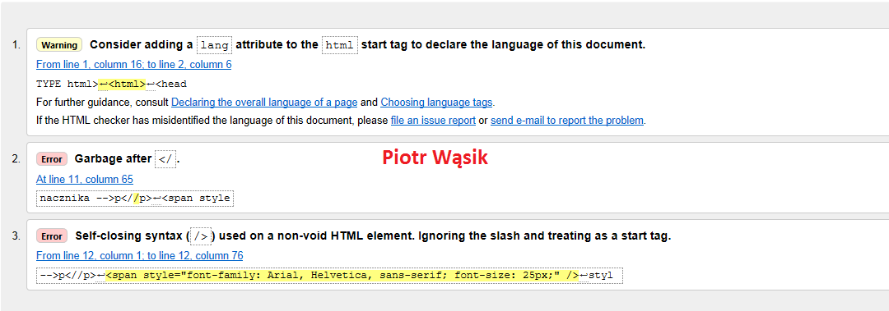
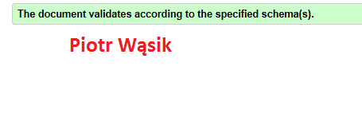

Walidacja
Program (może być aplikacja Web, czyli strona WWW) sprawdzający poprawność dokumentu o określonej składni, np. walidator kodu HTML, walidator kodu CSS. Pomyślne przejście walidacji oznacza zwykle, że kod został napisany zgodnie z gramatyką (składnią) danego języka. Walidatory potrafią, wskazać miejsce błędu oraz podać przyczynę błędu→mogą podawać numer błędu.

